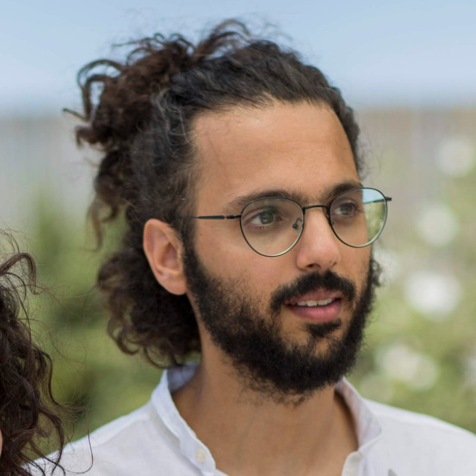

Neural circuits for vocal learning
Current Investigating how neural circuits support vocal learning — how the brain acquires, produces, and refines learned vocalizations.

Postdoctoral Researcher · Systems Neuroscience
I study how neural circuits represent the world and guide natural behavior — from hippocampal coding of space in freely flying bats, to the neural circuits underlying vocal learning in songbirds.
Vallentin Lab · Max Planck Institute for Biological Intelligence, Seewiesen, Germany
I'm a postdoctoral researcher in the Vallentin lab at the Max Planck Institute for Biological Intelligence, where I study the neural circuits that underlie vocal learning.
I completed my PhD and MSc with Prof. Nachum Ulanovsky at the Weizmann Institute of Science, studying how the hippocampus represents space in freely flying bats navigating very large environments. I have a background in mathematics, and I'm fascinated by how neural computation gives rise to natural behavior — how the brain encodes the world and learns from experience.
My research asks how the brain represents complex, naturalistic behavior at the level of neural circuits. I combine large-scale electrophysiology with quantitative analysis and theory to understand how populations of neurons encode information.
Current Investigating how neural circuits support vocal learning — how the brain acquires, produces, and refines learned vocalizations.
How the hippocampus represents space across scales in freely flying bats, revealing multiscale place codes and nonoscillatory phase coding in natural, large-scale environments.
Characterizing how the hippocampus replays experience in environments far larger than the classic laboratory setting, including fragmented replay of very large spaces.
*Equal contribution. See my Google Scholar profile for the full list.
The hippocampus is crucial for spatial memory and navigation. It contains place cells: spatially selective neurons found in areas CA1 and CA3—two distinct hippocampal subregions with substantially different anatomical connectivity. Previous studies have found highly similar spatial coding between CA1 and CA3 place cells. This raises the question of why two subregions that form consecutive processing stages would exhibit identical neural coding. Here we hypothesized that the lack of differences between CA1 and CA3 spatial coding is due to the experimental paradigm: using small arenas. We tested this hypothesis by simultaneously recording from CA1 and CA3 neurons in bats flying in flight tunnels up to 200 m in length. We identified highly distinct neural coding in CA1 and CA3: whereas CA1 neurons exhibited dense spatial coding, consisting of multiple place fields, CA3 neurons exhibited ultrasparse spatial coding, consisting predominantly of single place fields. Despite this marked difference, the sizes of place fields were very similar between the two subregions, across 5 different environment sizes ranging from 6 m to 200 m. Using a neural-network model, we show that such a sparse-to-dense transformation can facilitate fast learning of new spatial maps. We also found that in a large multicompartment environment, place cells were strongly modulated by trajectory history—a contextual effect (retrospective coding) that could last for over 100 m. Together, by using large naturalistic environments, we identified a CA3-to-CA1 coding transformation that serves to reformat spatial information into a more efficient, compressed neural code.
The hippocampus is crucial for memory. Memory consolidation is thought to be subserved by hippocampal “replays” of previously experienced trajectories. However, it is unknown how the brain replays long spatial trajectories in very large, naturalistic environments. Here, we investigated this in the hippocampus of bats that were flying prolonged flights in a 200-m-long tunnel. We found many time-compressed replay sequences during sleep and during awake pauses between flights, similar to rodents exploring small environments. Individual neurons fired multiple times per replay, according to their multiple place fields. Surprisingly, replays were highly fragmented, depicting short trajectory pieces covering only ∼6% of the environment size—unlike replays in small setups, which cover most of the environment. This fragmented replay may reflect biophysical or network constraints on replay distance and may facilitate memory chunking for hippocampal-neocortical communication. Overall, hippocampal replay in very large environments is radically different from classical notions of memory reactivation—carrying important implications for hippocampal network mechanisms in naturalistic, real-world environments.
Hippocampal place cells encode the animal’s location. Place cells were traditionally studied in small environments, and nothing is known about large ethologically relevant spatial scales. We wirelessly recorded from hippocampal dorsal CA1 neurons of wild-born bats flying in a long tunnel (200 meters). The size of place fields ranged from 0.6 to 32 meters. Individual place cells exhibited multiple fields and a multiscale representation: Place fields of the same neuron differed up to 20-fold in size. This multiscale coding was observed from the first day of exposure to the environment, and also in laboratory-born bats that never experienced large environments. Theoretical decoding analysis showed that the multiscale code allows representation of very large environments with much higher precision than that of other codes. Together, by increasing the spatial scale, we discovered a neural code that is radically different from classical place codes.
Hippocampal theta oscillations were proposed to be important for multiple functions, including memory and temporal coding of position. However, previous findings from bats have questioned these proposals by reporting absence of theta rhythmicity in bat hippocampal formation. Does this mean that temporal coding is unique to rodent hippocampus and does not generalize to other species? Here, we report that, surprisingly, bat hippocampal neurons do exhibit temporal coding similar to rodents, albeit without any continuous oscillations at the 1–20 Hz range. Bat neurons exhibited very strong locking to the non-rhythmic fluctuations of the field potential, such that neurons were synchronized together despite the absence of oscillations. Further, some neurons exhibited “phase precession” and phase coding of the bat’s position—with spike phases shifting earlier as the animal moved through the place field. This demonstrates an unexpected type of neural coding in the mammalian brain—nonoscillatory phase coding—and highlights the importance of synchrony and temporal coding for hippocampal function across species.
CA3 and CA1 are two consecutive stages of the hippocampus with very different wiring, yet in small lab arenas their place cells look surprisingly alike. By recording from both areas simultaneously while bats flew through tunnels up to 200 m long, we found the difference had been hidden by scale: CA3 cells were ultra-sparse (mostly a single place field), while CA1 cells were dense (many fields each), even though the individual field sizes stayed similar. Our simulations suggest this sparse-to-dense transformation helps the brain learn new spatial maps quickly while keeping an efficient, compressed representation of large environments.
During rest, the hippocampus is thought to “replay” past trajectories to help consolidate memory — but this had been studied mainly in rodents exploring small boxes. By recording CA1 activity in bats flying through a 200 m tunnel, we found that replays in natural-scale environments are highly fragmented: instead of recapitulating the whole flight, each replay covered only ~6% of it, and was biased toward meaningful events such as landings and crossings with other bats. This isn’t a species difference. When the bats flew in a short tunnel, their replays again covered much larger fractions of space — so it’s the size of the environment, not the species, that drives the fragmentation. And more generally, the bat replays shared the basic hallmarks of rodent replays, including duration, compression ratio, and coupling to sharp-wave ripples. This fragmentation may reflect biophysical or network constraints on how far a replay can extend, and hints at how the brain might chunk long experiences for memory.
Place cells have been studied mostly in rodents exploring small lab boxes, yet real-world navigation unfolds over hundreds of meters or more. To see what the hippocampus does at those scales, we recorded from CA1 neurons of bats flying in a 200 m tunnel, using a miniature wireless logger we developed. We found a multifield, multiscale code: a single place cell has many fields of very different sizes — spanning up to a 20-fold range, from under 1 m to over 30 m — which had never been seen in small setups. This code was present from the very first exposure to the environment, in both wild-born and lab-born bats, and our decoding analysis showed it forms an efficient, high-capacity representation of very large spaces — a new coding scheme revealed by studying the brain under naturalistic conditions.
In rodents, the hippocampus encodes the animal’s position through a temporal code — “phase coding” — that rides on a continuous “theta” rhythm, and the two were long thought to go hand in hand. Recording from bats, which lack this ongoing theta rhythm, we found that their hippocampal neurons nevertheless encode position through phase coding and fire in tight synchrony. This unexpected “nonoscillatory phase coding” dissociates phase coding from oscillations, suggesting that the temporal code itself — but not the underlying rhythm — is conserved across species (rodents, bats, and possibly primates).
Max Planck Institute for Biological Intelligence, Seewiesen, Germany
Vallentin lab — Neural Circuits for Vocal Communication
Weizmann Institute of Science, Rehovot, Israel
Advisor: Prof. Nachum Ulanovsky · Dissertation: Nonoscillatory phase coding
and multiscale representation of very large environments in the bat hippocampus
Awarded the John F. Kennedy Prize for outstanding PhD research
Weizmann Institute of Science, Rehovot, Israel
Advisor: Prof. Nachum Ulanovsky
Bar-Ilan University, Ramat-Gan, Israel · Dean's Honors List, Faculty of Exact Sciences
Download my full CV, including the complete list of publications, talks, teaching, and mentoring.
Download CV (PDF)I'm always happy to talk science, collaborations, and ideas. Find me here: